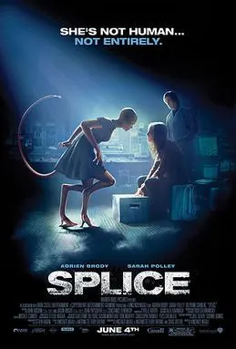

The genetics
Genetic engineering is the film's subject. Clive and Elsa build hybrid organisms by combining DNA from different species, and they create Dren out of scientific ambition and, in Elsa's case, personal need: she secretly uses her own DNA, which makes Dren in effect her genetic daughter. Their employer, interested only in proteins it can patent, is equally reckless and ends by exploiting the outcome. The story plays on familiar fears about biotechnology: hybrids with unpredictable traits, unforeseen changes such as the creatures' sex reversal, and scientists who cross ethical limits and lose control of their work. Moving genes between species is routine in real laboratories; bacteria carrying the human insulin gene have produced insulin for decades. But, as a scientist reviewing the film for Discover noted, creating a viable creature that combines human and multiple animal genomes, as Splice shows, remains very far off.
The story
Clive Nicoli and Elsa Kast, genetic engineers at the company N.E.R.D., splice animal DNA to create hybrids for medical use, including two large worm-like creatures, Fred and Ginger. When their employers forbid them to move on to a human-animal hybrid and order them to extract proteins for drug production instead, they secretly create one. The creature, Dren, grows rapidly and develops gills, wings and a stinger, and Elsa bonds with her as a mother. At a public presentation Fred and Ginger kill each other: Ginger had spontaneously changed sex. On Elsa's childhood farm, where they hide Dren, their relationship with her grows increasingly disturbed. Clive has sex with Dren and reveals that the human DNA came from Elsa herself. Dren apparently dies, returns as a male, kills Clive and two others, and rapes Elsa, who kills him. In the final scene, Elsa, pregnant, accepts payment from the company to carry the child to term.